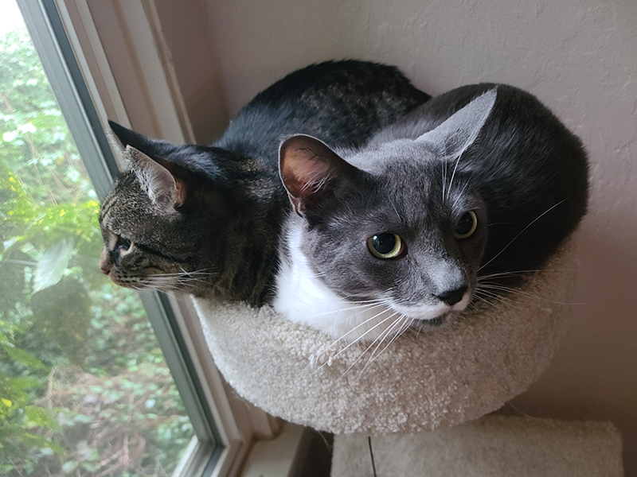

This section has text about me
I started leatherworking several years ago when I saw one of my friends livestreaming his work online. I had done some in the past but it never really hooked me. The second time around, it got me. Now I have been working the craft for the last 6 years, making wallets, belts, and custom day carry bags.
I also enjoy spending time creating and customizing Vtubers for use on streaming media platforms. This is a very recent hobby which I am very new to, but have had a lot of fun with and hopefully will get much better at it.
Github Profile:GitHub
Github Profile:LinkedIn